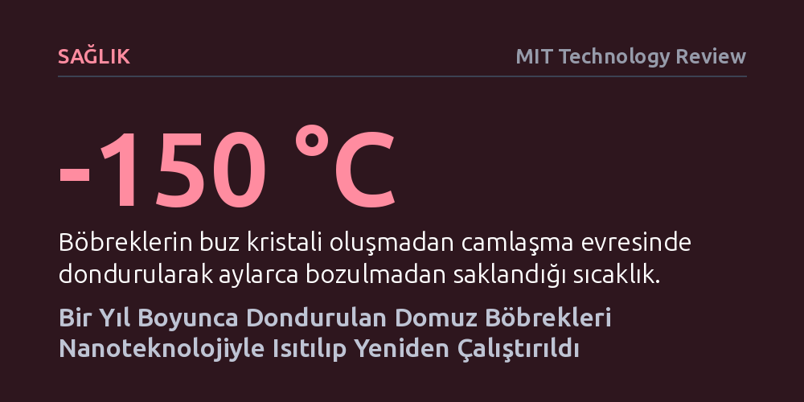

SAGLIK · MIT Technology Review · 2026-10-16
Araştırmacılar, eksi 150 derecede bir yıla kadar saklanan domuz böbreklerini manyetik nanoparçacıklarla homojen biçimde ısıtarak nakil sonrası yeniden çalıştırmayı başardı. İnsan boyutundaki organlarda ilk kez gösterilen bu yöntem, organ naklinde zamana karşı yarış devrini kapatabilir.
Organ naklini saatlerle sınırlı bir lojistik kriz olmaktan çıkarıp organların hastaları raflarda beklediği bir bankacılık modeline dönüştürmenin teknik olarak mümkün olduğunu kanıtlıyor.

Organ nakli cerrahisinde başarı, bugüne dek saniyelerle ölçülen acımasız bir lojistik operasyona bağımlıydı. Bir donörden alınan insan böbreği veya karaciğeri, buz üzerinde ve özel koruma solüsyonlarında yalnızca 24 ila 36 saat boyunca canlı kalabiliyor. Bu dar zaman aralığında hem alıcıyla doku uyumunun tespit edilmesi hem de organın nakil merkezine ulaştırılması gerekiyor; süre aşıldığında hayat kurtarabilecek binlerce organ kullanılamaz hale gelip çöpe gidiyor.
Minnesota Üniversitesi araştırmacılarının yürüttüğü yeni bir çalışma, bu zaman sınırını kökten geçersiz kılabilecek bir dönüm noktasına ulaştı. Eksi 150 dereceye kadar soğutularak dondurucuda tam bir yıl boyunca tutulan domuz böbrekleri, çözdürüldükten ve alıcı hayvanlara nakledildikten sonra yeniden canlanarak idrar üretmeyi başardı. Domuz böbreklerinin insan böbrekleriyle neredeyse aynı boyutta ve anatomik yapıda olması, yöntemin insanlarda da uygulanabileceğine dair en somut kanıtı sundu.
Hücreleri veya dokuları dondurarak bozulmadan saklama fikri tıp için yeni değil. Sperm, yumurta ve erken evre embriyolar on yıllardır camlaşma (vitrifikasyon) yöntemiyle aşırı düşük sıcaklıklarda saklanabiliyor. Ancak mikroskobik birkaç hücreyi dondurmakla yaklaşık 100 gramlık, karmaşık damar ağına ve milyonlarca filtreleme ünitesine sahip katı bir organı dondurmak tamamen farklı fiziksel kurallara tabidir.
Bir organ soğutulurken doku sıvısındaki su molekülleri jilet keskinliğinde buz kristalleri oluşturur. Bu kristaller damar duvarlarını parçalar, hücre zarlarını delik deşik eder ve organı geri dönüşsüz biçimde öldürür. Bunu önlemek için antifriz işlevi gören koruyucu kimyasallar kullanılır; ancak bu kimyasallar yüksek yoğunlukta uygulandığında doku için son derece zehirlidir. Üstelik büyük bir organı hem her noktasından aynı hızla soğutmak hem de hücreleri parçalamadan eşit şekilde ısıtmak bugüne kadar aşılamayan bir fiziksel bariyerdi.
Biyomühendis John Bischof ve nakil cerrahı Erik Finger liderliğindeki ekip, bu kısırdöngüyü aşmak için iki aşamalı bir biyomühendislik protokolü geliştirdi. Donör domuzdan çıkarılan böbreğin kanı temizlendikten sonra, organ iki saat boyunca dikkatle ayarlanan bir kriyoprotektan kokteyliyle dolduruldu. Ardından böbreğin tüm damar yatağına demir oksit nanoparçacıkları pompalandı. Hücrelere hiçbir zarar vermeyen bu mikroskobik parçacıklar, organın her köşesine eşit şekilde dağıldı.
Organ önce soğuk azot buharıyla eksi 120 dereceye düşürülüp cam kıvamına getirildi, ardından çatlamayı önleyen kısa bir beklemenin sonrasında nihai depolama sıcaklığı olan eksi 150 dereceye indirildi. Çözdürme anı geldiğinde ise ekip, organı yüksek frekanslı bir elektromanyetik alanın içine yerleştirdi. Manyetik alanın yönü saniyede milyonlarca kez değiştikçe dokunun içindeki demir nanoparçacıkları titreşerek ısı yaydı. Böylece böbrek, dıştan içe doğru değil, içindeki her bir hücrenin çevresinden aynı anda ve saniyeler içinde homojen biçimde ısındı.
Isınma işlemi tamamlandıktan hemen sonra koruyucu kimyasallar ve nanoparçacıklar organın damarlarından yıkanarak tahliye edildi. Araştırmacılar, canlandırılan böbrekleri hem laboratuvardaki yapay perfüzyon makinelerine bağlayarak inceledi hem de canlı domuzlara naklederek iki saat boyunca gözlemledi.
Ameliyat sırasında kan akışı sağlandığında gri ve cansız duran böbrekler hızla canlı pembe rengine kavuştu ve yeniden idrar filtrelemeye başladı. 2023 yılında yalnızca 1 gramlık sıçan böbreklerinde gösterilen bu başarının, insan organlarıyla eşdeğer büyüklükteki 100 gramlık domuz böbreklerinde de tekrarlanabilmesi, yöntemin ölçeklenebilirliği konusundaki en büyük soru işaretini ortadan kaldırdı.
Elde edilen başarı organ nakli tarihi açısından devasa bir kilometre taşı olsa da klinik kullanıma girmeden önce aşılması gereken ciddi pürüzler bulunuyor. Isıtılan böbreklerin beklenenden daha az idrar ürettiği ve kriyoprotektan kimyasalların zehirli etkisinden kaynaklanan doku hasarları taşıdığı tespit edildi. Ayrıca bu organların nakledilen hayvanı haftalar veya aylar boyunca sağlıklı bir şekilde yaşatıp yaşatamayacağı henüz test edilmedi.
Araştırma ekibi şimdi daha az toksik koruyucu kimyasallar üzerinde çalışıyor ve nakledilen hayvanları daha uzun süre izleyecekleri yeni deneyler planlıyor. Bu engeller aşıldığında organ nakli lojistiği tamamen değişebilir: "Gerçek bir organ bankacılığında hastalar organ beklemek yerine, organlar hastaları bekler." Böyle bir dönüşüm, yalnızca bağışlanan organların ziyan olmasını engellemekle kalmayacak, aynı zamanda kaza ve ani travma vakalarında hazır bekletilen uyumlu organların dakikalar içinde nakledilmesini sağlayacak.